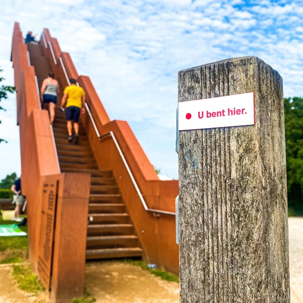
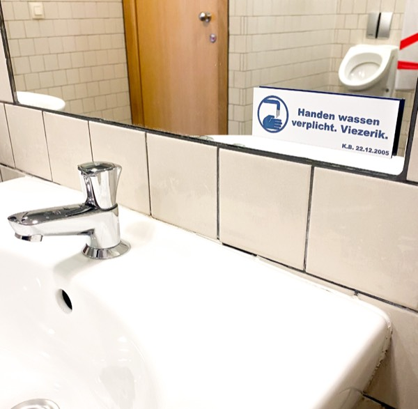

Verrassingsweekend: vliegtuignacht in Bilzen en een dag door België
Lieve Marcel & Alex,
Gefeliciteerd, allebei bijna jarig! Jullie cadeau is geen pakje, maar een avontuur.
Zorg dat jullie op donderdag 1 oktober om 15:30 op station Maastricht staan. Daar wacht een mystery guest jullie op.
Neem slaapspullen mee (één nachtje) en laat je verrassen. De rest regelen wij.
Marcel & Alex met slaapspullen
Ze staan om 15:30 op station Maastricht. Daar wacht de mystery guest (Tim) ze op. Verder weten ze niets.
Wolfsbergstraat 10, 3740 Bilzen · overnachting in een echt vliegtuig met cockpit
Tim brengt ze naar de Airbnb en pakt lekker een biertje met ze in het zonnetje. Rustig aankomen, genieten, en overnachten op een plek die perfect past bij een piloot.
Tim zegt het als hij ze achterlaat
Tim laat weten: zorg dat je morgen (vrijdag) om 09:30 klaarstaat en dat je dan al ontbeten hebt. Meer hoeven ze niet te weten.
Vughterstraat 130, 5211 GM 's-Hertogenbosch
Om 08:00 rijden we weg. Het is ± 1,5 uur naar Bilzen, dus rond 09:30 zijn we bij het vliegtuig, met een kwartier speling voor ochtendfile.
Wolfsbergstraat 10, 3740 Bilzen
Om 09:45 zijn we samen bij het vliegtuig (ze staan al om 09:30 klaar en hebben ontbeten, een kwartier speling). We doen daar eerst rustig een koffietje en rijden rond 10:30 weg.
Croquê Thier 15, 4690 Bassenge (Eben-Emael, bij Maastricht) · Musée du Silex
Bizarre silex-toren van 33 meter met vier reuzendieren bovenop. Naar boven klimmen voor een weids uitzicht, plus het museum en het kunstpark. Precies iets voor een piloot.
Glabbeeksesteenweg 32, 3390 Tielt-Winge
Nichtje Marleen (ook jarig op 1 oktober!) schuift hier aan. Rustig de tijd nemen, het is dubbel feest.
Oude Pastoriestraat 22, 3390 Tielt-Winge
Snelle stop na de lunch: even naar boven, een foto en een rondje met Fransje, klaar. Zo houden we tijd over voor het museum later.

Universiteit Antwerpen, gebouw R, Rodestraat 14, 2000 Antwerpen · gratis
Bij aankomst in Antwerpen rijden we hier als eerste naartoe. Zeven wereldberoemde musea nagebouwd op 1/7 schaal, in de gangen van het universiteitsgebouw. Heerlijk absurd en vol detail.
Hanzestedenplaats 1, Antwerpen · gratis
Tien verdiepingen roltrap omhoog langs de wandelboulevard, met boven een rondom-uitzicht over de stad, de haven en de Schelde. Mooie afsluiter van het rondje torens en hoogte.

Ernest Van Dijckkaai 18, Antwerpen · aan de Schelde
Na twee uur lunchen hoeft het niet meer uitgebreid: een hapje met goed speciaalbier. Natuurwijn, craft beer en barfood, en precies iets voor Marcel & Alex met hun voorliefde voor geuze.
Station Breda, Stationsplein 16, 4811 CB Breda
Marcel & Alex pakken rond 22:30 de trein naar Rotterdam (de precieze tijd kijken we op de dag zelf), wij rijden terug naar de Vughterstraat in Den Bosch (± 45 min, thuis rond 22:45). Een leuke 24 uur plus achter de rug, en ze zijn nog eens ergens geweest. Precies de bedoeling.